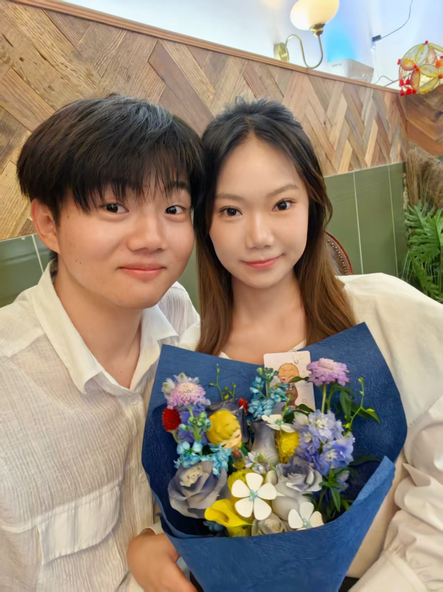

周末烘焙记录
2026-09-22


第一次烤曲奇
周末在家闲着无聊，突然想做点什么。翻到一个曲奇饼干的教程，看起来不太难，就决定试试。
材料准备
- 黄油 100g
- 糖粉 50g
- 鸡蛋 1个
- 低筋面粉 200g
- 盐少许
制作过程
黄油软化后加糖粉打发，加鸡蛋继续搅拌，最后筛入面粉揉成面团。
"为什么我的面团这么软？"
查了一下，原来是黄油打发过度了。但是既然都做到这一步了，那就继续吧！
用裱花袋挤出形状（虽然挤得歪歪扭扭的），送进烤箱 180 度烤 15 分钟。
成品
出炉的时候厨房里香喷喷的！虽然形状不太好看，但是自己做的就是好吃。
下次要挑战做蛋糕！
小贴士：黄油一定不要打发太久，不然面团会太软。